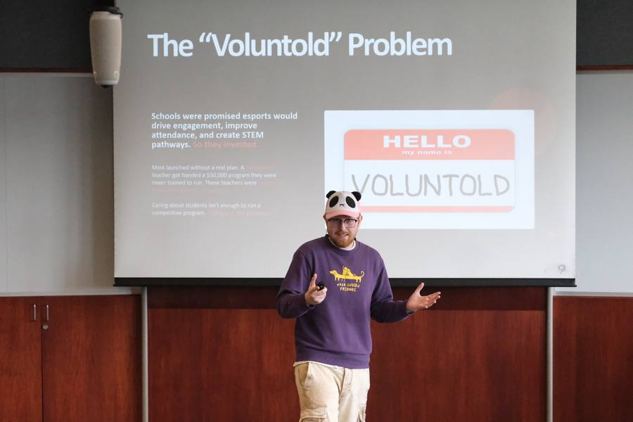
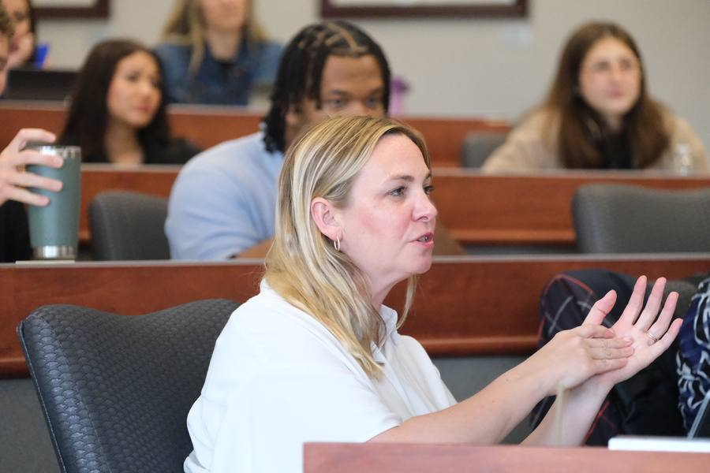
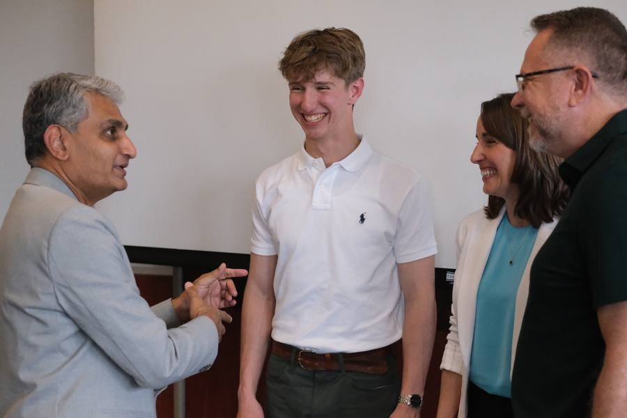

The Entrepreneur's
Guidebook
You don't need an idea, a business major, or money to start. This is how Mizzou students go from curious to founder — every resource, deadline, and person who can help, in one place. Open to every major and every year.

Entrepreneurship at Mizzou is not simply an extracurricular activity. It is a discipline taught by experienced entrepreneurs, supported by real capital, and connected to one of the strongest alumni networks in the Midwest. This guidebook will help you find your way through it.
Curious? Four ways in.
Most founders did not start with an idea. They started by showing up somewhere, asking a question, or reading one thing. Everything below is free, open to any major, and needs no application. Pick one to do this week.
Watch a founder pitch, for free
Columbia has a weekly founder gathering and a monthly creative talk. No sign-up, no pitch of your own, just coffee and a room full of people building things.
The questions you have before you have a venture
How do you find a problem worth solving? How do you find a co-founder on this campus? Can you do this and keep your grades? Three short, sourced answers open the Playbook.
The terms everyone uses
MVP, pivot, LLC, nondilutive. A dozen words explain most of what you'll hear at a pitch night. Each one has a plain definition and a real example.
Twenty minutes with the CEI
You do not need a pitch. Tell us your major and what you're curious about, and we'll point you to the right first step and the right person.
Nine of the twenty-three alumni featured below studied journalism, engineering, agriculture, biology, math, or law. The business major is optional. The showing up is not.
Four phases to build something real
Every founder's path is different, but the underlying structure is consistent. We've organized Mizzou's entrepreneurship resources around the four phases of building a venture — so you can find what you need at the moment you need it.
Some work isn't a phase you finish — it runs across all four. Keep these going from day one:

AODO MedTech wins $7,000
A Trulaske student team turned an idea into investment-ready capital through the Entrepreneurship Alliance pitch competition. This is what Phase 3 looks like in practice.
Opportunity Discovery
Find a problem worth solving
Every venture starts with a problem worth pursuing. Use Mizzou's earliest-stage resources to explore ideas, talk to people, and pressure-test whether the opportunity is real before you build anything.

Center for Entrepreneurship & Innovation (CEI)
Trulaske's home for entrepreneurial resources, mentorship, and programs.
Griggs Innovators Nexus
The hub of Mizzou's entrepreneurial community in the MU Student Center — collaborative workspaces, retail storefronts, incubator offices, and programming.
Entrepreneurship Quest Accelerator
Intensive accelerator program offering courses, mentorship, networking, and $40,000 in prize money for student-led ventures.
Entrepreneurship Alliance
CEI's flagship eight-week accelerator taking student founders from idea to launch with mentorship and a chance to pitch for seed funding.
Technology Venture Studio by Redbud VC
Griggs Innovators Nexus studio developing student founders with mentorship, networks, and capital. Sponsored by Redbud VC and EquipmentShare.
REDI
Regional Economic Development Inc. — research, economic development, and innovation support for Columbia entrepreneurs.
GIN Incubator Office Space
Rent-free 100-sq-ft office space in the MU Student Center, awarded competitively for an academic year — ideal for e-commerce and software ventures.
Missouri SBDC
Free consulting, training, and resources for small businesses and startups across Missouri.
Codefi
Missouri nonprofit supporting founders with startup resources, AI training, software development, and grant funding.
Missouri Startup Weekend
54-hour event where developers, designers, and business builders form teams and launch startups in a weekend.
Pitch Competitions
Active calendar of Mizzou and regional pitch competitions with cash prizes and funding opportunities.
Founder Institute
Pre-seed accelerator with chapters globally. Structured 4-month curriculum for first-time founders building from scratch.
Customer & Model Validation
Prove people want it and will pay
Before you build, prove the problem is real and the business can work. Test demand with real customers, sharpen your model, and use the programs designed to validate — not just cheerlead — your idea.

Mizzou Startup Community
Online platform connecting Mizzou entrepreneurs, alumni, and mentors.
Collegiate Entrepreneurs' Organization (CEO)
The only student organization on campus dedicated to entrepreneurs. The first stop for building your peer network at Mizzou.
Creative Mornings Columbia
Monthly breakfast lecture series for Columbia's creative and entrepreneurial community.
1 Million Cups Columbia
Weekly gathering where local entrepreneurs present their work to the community and receive feedback.
Columbia Chamber of Commerce
Local business community and networking hub for Columbia-based ventures.
Main Street Summit
Annual entrepreneurship conference in Columbia featuring speakers, panels, and networking.
NSF I-Corps
National Science Foundation program teaching academic founders to commercialize research. MU is part of the Great Lakes regional hub.
Trulaske Alumni Entrepreneurs
Connect with Trulaske alumni founders and operators for mentorship and introductions.
Venture Launch
Stand it up legally and operationally
With demand validated, it's time to formally launch — form the entity, secure early capital, and put the operational foundation in place. Mid-Missouri has a deeper funding and support stack than most assume.

Redbud VC
Missouri-based venture capital firm investing in pre-seed and seed-stage startups.
Missouri Technology Corporation (MTC)
State-funded organization providing capital and support for Missouri-based technology startups.
Missouri Innovation Center (MIC)
Business incubator with workspace, mentorship, and direct connections to investors.
Allen Angel Fund
Trulaske's student-managed angel investment fund. Real capital, real deals, real students.
GIN Retail Program
Griggs Innovators Nexus retail program for student consumer-product ventures.
Centennial Investors
Early-stage venture capital firm focused on Midwest entrepreneurs and ventures.
St. Louis Arch Angels
Network of accredited investors funding early-stage Missouri-region startups, typically $50,000–$500,000 per round — a range often underserved by institutional VCs. Since 2005: $122.7M invested across 156+ ventures. Recent exit: Acera Surgical, acquired by Solventum for up to $850M.
Arch Grants
$75,000 equity-free grants (plus $25,000 relocation) for early-stage startups that headquarter in St. Louis for at least one year. Idea-stage through pre-Series A.
REDI Small Business Grant
A $50,000 pool split among eight entrepreneurs (two $10,000, six $5,000). Open to any entrepreneur with a City of Columbia business license. Next cycle: spring 2027.
Trulaske VCs & Angels
Network of Trulaske alumni who are venture capitalists and angel investors.
Growth & Scaling
Grow responsibly and sustainably
With a working venture, the question becomes how to grow it well. National accelerators, growth-stage capital, and the platforms that put your venture in front of global investors — pursued at a pace your business can sustain.
Y Combinator
The most prestigious startup accelerator in the world. Three-month program in the Bay Area.
Techstars
Global network of accelerators, mentors, and investors with vertical-specific programs.
Permanent Equity
Investment firm focused on acquiring and growing operating businesses for the long term.
AngelList
Platform connecting startups with investors, syndicates, and operating talent.
gener8tor
Midwest-focused accelerator network with programs across multiple states. Strong for B2B SaaS, fintech, and consumer ventures.
Capital Factory
Texas-based accelerator and venture community. Active in deep tech, defense, energy, and software.
My founder path
Pick your phase and work the list. Your progress is saved on this device, so you can leave and pick up where you stopped.
Saved in this browser only — nothing is sent anywhere, and clearing your browser data clears your progress.
What's open right now
Grants, competitions, and accelerators you can apply to, sorted by what closes first. Add any deadline to your calendar in one click.
Dates marked unconfirmed are the program's usual cycle, not a published date for this year — always confirm on the program's own site before you plan around it. Deadlines shift, and a missed one is expensive. Spot something out of date? Tell us and we'll fix it.
How to do the hard things
Thirteen questions every founder faces, starting with the three you will ask before you have a venture at all. The answers are distilled from the most authoritative voices in venture — Sequoia Capital, Y Combinator, Paul Graham, Marc Andreessen, and the founders who built Airbnb, Stripe, and Facebook — into a starting point. Follow the links for the full frameworks.
Source: Paul Graham, How to Get Startup Ideas (Y Combinator)
You do not need an idea to start. You need a problem, and the best ones are found, not invented. Paul Graham's advice to students is to stop trying to think of startup ideas and start noticing what is broken around you:
- Notice problems you have yourself. The best startup ideas are things the founders want, can build, and few others realize are worth doing. Your own frustrations are the cheapest research you will ever do.
- Keep a list for two weeks. Every time something annoys you, wastes your time, or makes you say "why is this so hard," write it down. Ten entries is a good start. Most will be small. One or two will not be.
- Live in the future. Get to the edge of a field you already care about, whether that is nursing, agriculture, esports, or journalism, and look for what is missing. People at the frontier see problems a year before everyone else.
- Look for the schlep. Problems that seem tedious or unglamorous are often the most valuable, because everyone else avoided them. Stripe existed because handling payments was a hassle nobody wanted to touch.
- Talk to ten people who have the problem. Do not pitch. Ask what they do about it today, how much it costs them, and what they have already tried. If nobody is bothered enough to complain, move to the next item on your list.
At Mizzou, the next step is free: bring your list to the Griggs Innovators Nexus or an Entrepreneur Quest info session. Nobody there expects a finished idea. They expect a problem you can describe in one sentence.
Read How to Get Startup Ideas →Source: Y Combinator's co-founder guidance and Noam Wasserman, The Founder's Dilemmas
Y Combinator has funded thousands of teams and says the same thing every year: the strongest founding teams worked together before they committed to each other. A campus is one of the easiest places in the world to do that.
- Leave your college. A business major plus a business major is two people with the same gaps. The teams that win pitch competitions usually pair someone who can build (engineering, computer science, health sciences, design) with someone who can sell and organize.
- Work together before you decide. Missouri Startup Weekend, a class project, a hackathon, or a weekend building a landing page tells you more about a person than ten coffees. Notice who shows up on time, finishes what they said they would, and stays calm when things break.
- Go where builders already gather. The Collegiate Entrepreneurs' Organization, 1 Million Cups, Entrepreneur Quest cohorts, and the Griggs Innovators Nexus are full of people looking for exactly what you are looking for.
- Have the awkward conversation early. Wasserman's research on thousands of founders found that teams who split equity in the first five minutes, or never discussed it, were far likelier to fall apart. Talk about hours, money, roles, and what happens if one of you leaves, before it matters.
- Choose trust over resume. Skills can be learned or hired. Whether you can tell each other hard truths cannot. Start small, then formalize with a vesting schedule (see the question on splitting equity).
If nobody on campus fits, Y Combinator runs a free co-founder matching platform used by tens of thousands of founders. It works best once you can describe a problem and the skills you bring.
Visit YC Co-Founder Matching →Source: Paul Graham, A Student's Guide to Startups, and how Mizzou student founders actually manage it
Yes, if you treat it like one more class rather than a second life. Most student ventures fail not because the idea was bad but because the founder tried to do everything at once and burned out by midterms. The founders who last set a semester-sized goal and a weekly budget of hours.
- Budget hours like credits. A three-credit class takes about nine hours a week including class time. Give your venture five hours a week for one semester and protect them on your calendar. The Semester Math tab in the Founder Workbench below does the arithmetic.
- Pick a semester-sized goal. Not "launch a company." Ten customer interviews, one landing page with sign-ups, or one pitch competition entry. Small, finished, and measurable beats big and abandoned.
- Make coursework do double duty. Where a professor allows it, make your venture the subject of the class project, the research paper, or the capstone. Many Mizzou founders wrote their first business model in a class they were already taking.
- Use programs with structure. Entrepreneur Quest and the Entrepreneurship Alliance run on a schedule with deadlines and mentors, which is exactly what a busy student needs. Structure is a feature, not a constraint.
- Know what stopping looks like. Decide in advance what evidence would tell you to pause. Stopping after ten interviews because nobody has the problem is a result, not a failure. You learned something most graduates never do, in one semester, for free.
Graham's point to students is that the risk is lower now than it will ever be again: no mortgage, no dependents, and a campus full of potential co-founders and free advice. The grades matter. So does the fact that you can try this for the price of a few evenings.
Read A Student's Guide to Startups →Source: Paul Graham, Do Things That Don't Scale (Y Combinator)
The single most repeated piece of startup advice from Y Combinator: in the beginning, do the unscalable things. Your first customers will not arrive on their own. The principles:
- Recruit users manually, one by one. Nearly all startups have to. You cannot wait for users to come to you; you go out and get them. Stripe famously set up accounts for early users on the spot rather than asking them to try a beta later — what YC calls the Collison installation.
- Deliver an overwhelmingly good experience. With only a handful of customers you can give each one a level of attention that large companies never can. Make your first users so happy they tell others.
- Go to them in person. Airbnb founders flew to New York, knocked on hosts doors, and helped them directly. The direct contact is also a discovery mechanism: you learn what works, where users get confused, and what to build next.
- Start narrow, then widen. Facebook launched at one school, got it hot, then added the next. Contain the fire to get it really hot before adding more logs.
- Treat the unscalable work as the product, not a distraction. Manual recruiting and hands-on support are how you find product-market fit, not a detour from it.
The question to ask is not whether the company is taking over the world today, but how big it could get if the founders did the right things — and the right things often seem laborious and inconsequential at the time.
Read Do Things That Don't Scale →Source: the Sequoia Capital pitch deck framework
Sequoia, an early backer of Apple, Google, Stripe, and Airbnb, recommends a deck of roughly ten slides. The structure is deliberately spare: it is built around the questions an investor asks in the first few minutes. Each slide answers exactly one. The ten slides:
- Company purpose. Define the company in a single declarative sentence.
- Problem. Describe the customer pain. Outline how the customer addresses the issue today.
- Solution. Show your value proposition and why it makes the customer life better. Provide use cases.
- Why now. Establish the historical evolution of your category and the recent trends that make your solution possible.
- Market size. Identify the customer you serve. Calculate TAM, SAM, and SOM.
- Competition. List competitors and your competitive advantages.
- Product. Show the product: form, features, architecture, and roadmap.
- Business model. Explain how you make money: revenue model, pricing, account economics, and sales approach.
- Team. Present the founders and key team members, and the story of why this team wins.
- Financials. Share traction and a simple financial model.
Sequoia notes that what wins is not slide design but clarity of thinking and scope of ambition. Airbnb early deck was plain; the thinking behind it was not.
Read the Sequoia framework →Source: Y Combinator, A Guide to Seed Fundraising, and Paul Graham, How to Raise Money
Y Combinator has funded thousands of startups and codified what early founders need to know. The essentials:
- Build something people want first. The strongest fundraising position is traction. Do not raise before you have evidence the market wants what you are building.
- Know why and how much. Raise enough to reach a meaningful milestone, typically twelve to eighteen months of runway. Avoid raising on a vague plan.
- Use a standard instrument. YC created the SAFE (Simple Agreement for Future Equity) to make early rounds fast and inexpensive. Standard documents reduce legal cost and negotiation friction.
- Get the first commitment. Fundraising has momentum. One credible investor saying yes makes the next yes easier. Pursue the first lead aggressively.
- Treat it as a numbers game. You will hear no many times before yes. Meet many investors in parallel, set a deadline, and do not mistake politeness for commitment.
- Set a deadline and close. Fundraising is a distraction from building. Run it as a concentrated process, then return to the product.
Paul Graham frames the typical path in three phases: tens of thousands from an accelerator or angels, then a few hundred thousand to a few million to build the company, then later rounds to accelerate growth once the company is clearly succeeding.
Read the YC seed guide → Read Paul Graham on raising money →Source: Marc Andreessen, The Only Thing That Matters (2007)
Andreessen — co-creator of the first popular web browser and backer of Facebook, Stripe, and Coinbase — argues that the single thing a startup must achieve is product-market fit: being in a good market with a product that can satisfy it. Everything else is secondary. How to recognize it:
- You can feel its absence. When you do not have it, customers are not getting value, word of mouth is not spreading, usage is not growing, the press is indifferent, and sales cycles drag. If this is your reality, you do not have it yet — no matter how good the product looks.
- You can feel its presence even more clearly. When you have it, customers buy as fast as you can make the product, usage grows as fast as you can add servers, money piles up, and you are hiring sales and support as quickly as you can. Demand pulls the product out of you.
- Market is the dominant force. When a great team meets a lousy market, the market wins. When a lousy team meets a great market, the market wins. Pour your energy into being in a market with real, urgent demand — it forgives many other mistakes.
- Do whatever it takes to get there. Change people, rewrite the product, move to a different market, tell investors and your board to wait. Reaching fit is worth almost any sacrifice, because life before it and after it are entirely different.
- Measure the pull, not vanity metrics. Retention, organic word of mouth, and customers who would be very disappointed without you are truer signals than raw signups or press. The market votes with behavior, not compliments.
Most startups that fail do so because they never reach product-market fit. Before it, focus on nothing else; after it, the job changes entirely.
Read The Only Thing That Matters →Source: Y Combinator (Michael Seibel) and Paul Graham on co-founders
Co-founder conflict is one of the leading causes of startup death — Y Combinator has observed that roughly one in five of its startups loses a founder, and disputes over equity are a frequent trigger. The discipline that prevents it:
- Pick people you know, not résumés. The strongest co-founder relationships come from having worked or studied together. You are choosing someone to be in a high-stress relationship with for years; prior shared experience predicts survival better than skills on paper.
- Optimize for complementary strengths and shared values. You want different abilities (so you cover more ground) but aligned commitment and ethics (so you do not fracture under pressure). Talk explicitly about ambition, work expectations, and what each of you wants from the company.
- Split equity close to equal. Almost all the work is ahead of you, so dividing equity on the basis of who had the idea or who contributed first is a mistake. YC's guidance is to be generous: a meaningfully unequal split signals that you do not value a partner, and that resentment compounds over years.
- Always vest, always with a cliff. Equity should vest over about four years with a one-year cliff, for every founder including the CEO. This protects the company if someone leaves early, and protects each founder from carrying a partner who walks away.
- Decide who is CEO, and write it down. Equal equity does not mean no decision-maker. Name a single CEO to break ties, put the agreement in writing early, and have the hard conversation now rather than during a crisis.
Fairness is not the same as symmetry, but generosity early is cheap insurance. The equity conversation feels awkward at the start and catastrophic if deferred — have it before there is anything to fight over.
Read the YC equity guide →Source: Brian Chesky (Airbnb) on hiring, and standard early-stage practice
Your first ten hires set the culture and ceiling of the company. Airbnb co-founder Brian Chesky, who built a Fortune 500 company from three founders, argues founders should treat early hiring as one of the most important things they personally do — not something to delegate. The principles:
- Hire for the result, not the title. Focus on what a person has actually accomplished and the impact they can have, rather than pedigree or an impressive-sounding résumé. Early-stage work rewards ownership over credentials.
- Hire missionaries, not mercenaries. The best early employees believe in the mission and would take the work even without the upside. People motivated mainly by money or status leave when a better offer or a hard stretch arrives.
- Screen for slope, not just position. A startup changes fast; you need people whose rate of learning is high, who thrive without structure, and who will be more capable in a year than the role requires today.
- The founder stays in the details of hiring. Do not outsource your culture. Founders should interview early hires personally, define the bar, and be willing to wait for the right person rather than fill a seat fast.
- Hire slow, fire fast. A wrong early hire is disproportionately costly because each person is a large fraction of the company. Take time to get it right, and act quickly and humanely when someone clearly is not.
Great leadership in the early days is presence, not absence. The people you bring in first will hire everyone after them — set the bar high enough that you would be proud to work for any of them.
Read YC on early hiring →Source: value-based pricing practice (Patrick Campbell / ProfitWell and others)
Pricing is the single most under-managed lever in most startups, and a change to it flows straight to the bottom line. Founders chronically underprice out of fear. The discipline that experienced operators apply:
- Price on value, not on cost. What it costs you to deliver should set a floor, not the price. Anchor instead to the economic value the customer receives — what your product saves or earns them — and capture a fraction of it.
- Talk to customers about willingness to pay. Pricing is a research problem, not a guess. Ask buyers what they currently spend to solve the problem, what would be too expensive, and what would be so cheap they would doubt the quality. Patterns emerge quickly.
- Pick a value metric that scales with the customer. Charge along the dimension that grows as the customer gets more value — seats, usage, transactions — so your revenue rises with their success rather than capping at a flat fee.
- Start higher than feels comfortable. Underpricing is more common and more dangerous than overpricing: it starves you of margin to reinvest and signals low value. You can almost always discount down; raising prices later is harder.
- Treat price as a living experiment. Revisit it regularly, segment it, and test changes deliberately. Small, disciplined adjustments to pricing often outperform large efforts to win new customers.
A product's price is a statement about its value. If no customer ever pushes back on your price, it is almost certainly too low.
Read on pricing strategy →Source: Eric Ries, The Lean Startup
Eric Ries defines a pivot as a structured course-correction designed to test a new fundamental hypothesis about the product, strategy, or engine of growth. Knowing when to pivot — versus persevere — is one of the hardest judgments a founder makes. The framework:
- Hold a regular pivot-or-persevere meeting. Decide on a cadence and force the question deliberately. Pivots are delayed because founders avoid the conversation, not because the signal is unclear; scheduling it removes the emotion of avoidance.
- Judge by validated learning, not vanity metrics. Rising totals (downloads, registered users) can mask a failing engine. Use cohort analysis and actionable metrics: are new customers behaving better than old ones because of what you changed? If the numbers improve but never enough, that is a pivot signal.
- A pivot is a new hypothesis, not surrender. Keep what you have learned. A pivot might change the customer (same product, new segment), the problem, the business model, or the growth engine — while retaining the validated insights underneath.
- Watch for diminishing returns. When experiments become less productive and the current approach feels less effective over time, the runway you have left is your budget for pivots. Each one needs enough remaining runway to be tested properly.
- Pivot decisively, then commit. A half-pivot is the worst outcome — you keep one foot in the old idea and never give the new hypothesis a fair test. Once you decide, reset the experiments and run hard at the new direction.
The startup's runway is the number of pivots it can still make. Conserve cash not just to survive, but to buy yourself more attempts to find what works.
Read the Lean Startup principles →Source: Paul Graham, Default Alive or Default Dead?
Paul Graham argues that every founder should know, at all times, the answer to one question: if your current growth rate and expenses hold and you raise no more money, do you reach profitability before the money runs out? That is the difference between default alive and default dead. The discipline:
- Know which one you are — today. Most founders cannot answer this off the top of their heads, which is dangerous. Model your revenue growth, expenses, and cash on hand so you always know whether the trajectory reaches profitability before zero.
- Ask the question early. The time to find out you are default dead is while you still have enough runway to do something about it. Discovering it late removes every good option and leaves only desperate ones.
- If default dead, fix growth before raising. Raising more money to cover a broken trajectory only postpones the reckoning. Investors can tell. Get to default alive on your own engine, and you raise from a position of strength rather than need.
- Control the two levers you own. You can grow revenue or cut costs. Hiring is the most common way founders accidentally become default dead — each hire pushes profitability further out, so add people deliberately and only against real growth.
- Default alive buys you freedom. A company that can reach profitability on its own terms can choose whether and when to raise, walk away from bad terms, and survive a funding winter. That optionality is worth more than a higher valuation.
The first thing to do is measure honestly. A founder who knows they are default dead can act; one who assumes the next round will save them often runs out of room to be saved.
Read Default Alive or Default Dead? →Source: Paul Graham, Founder Mode (2024)
As startups grow, founders are told to run them like a manager: hire good people and give them room to do their jobs. Drawing on a talk by Airbnb's Brian Chesky, Paul Graham argues this conventional advice often backfires, and that founders can lead differently. The ideas:
- "Hire good people and leave them alone" can fail. Chesky followed that standard advice at Airbnb and the results were poor; he reversed course by studying how Steve Jobs actually ran Apple. Delegation without engagement can let problems hide behind layers.
- Stay in the details that matter. Founder mode means remaining engaged below the layer of your direct reports — knowing the product, the customers, and the work deeply — rather than managing only through summaries and dashboards.
- Skip-level by design. Founders can legitimately reach past the org chart: company-wide meetings, direct contact with people several levels down, and involvement in key projects. What looks like micromanagement in a manager can be essential context for a founder.
- Guard against being managed by your reports. Well-meaning executives may try to keep you out of the details for the sake of tidy process. Founders who let that happen lose touch with their own company; presence, used well, is not the same as meddling.
- You have permission to run it your way. Much startup advice comes from people who have managed companies but never founded one. A founder's relationship to the company is different, and the way to lead it does not have to copy the professional-manager playbook.
Founder mode is still being mapped, and it is not a license to micromanage — it is permission to stay deeply connected to the company you built as it grows beyond what one person can see at once.
Read Founder Mode →AI is your superpower
A first-time founder in 2026 can do what a funded team did five years ago. AI compresses research, prototyping, drafting, and analysis into hours — letting one person test more ideas, ship faster, and punch far above their headcount. Below: where the technology came from, what is current, what to listen to, and where it is headed.
Source: original research papers, peer-reviewed and openly published
You do not need to read the math to grasp the ideas. A handful of papers explain why the tools you now use every day exist. Knowing the lineage helps you reason about what AI can and cannot do for your venture.
- Attention Is All You Need (Vaswani et al., 2017). Introduced the Transformer architecture that underpins nearly every modern large language model. This is the foundational paper of the current era.
- BERT (Devlin et al., 2018). Showed the power of pre-training deep bidirectional language representations — a key step toward general-purpose language understanding.
- Language Models are Few-Shot Learners (Brown et al., 2020). The GPT-3 paper, which demonstrated that scaling models lets them perform new tasks from just a few examples in the prompt.
- Training language models to follow instructions with human feedback (Ouyang et al., 2022). The InstructGPT paper behind RLHF — the technique that made models genuinely helpful and conversational.
For founders: these papers explain why prompting works the way it does. The "few-shot" insight in particular is the basis for most practical prompt engineering — show the model examples of what you want.
Source: model provider announcements and benchmark trackers, as of
Last reviewed: . Model names below age quickly. For the current leaderboard — live rankings on speed, price, and quality across every major provider — see Artificial Analysis.
The frontier moves monthly, so treat any specific model as a snapshot. Four labs are leapfrogging each other, and the practical takeaway matters more than the leaderboard: capable models are getting cheaper fast, which is pure upside for a bootstrapped founder.
- The current flagships. the newest Anthropic Claude, OpenAI GPT, Google Gemini, and xAI Grok models are the ones worth comparing for serious work. Version numbers change every few months, so each lab's news page is the best place to see what shipped most recently.
- Models became agents. The defining shift of 2026 is that frontier models stopped being chatbots and started doing multi-step work — operating tools, writing and running code, and completing long tasks with less hand-holding.
- Price is collapsing. Mid-tier models now rival last year's flagships at a fraction of the cost, and open-weight options keep improving. For most startup use cases, you no longer need the most expensive model.
- Compare before you commit. Leaderboards like Artificial Analysis track speed, price, and quality across providers — useful for picking the cheapest-capable model for a given task. And pin your version: providers silently upgrade "latest" endpoints, so build on an explicit version and keep a small test set so a new release doesn't quietly change your output.
For founders: a sensible default is to build provider-agnostic where you can, prototype on whatever model is cheapest-capable for the task, and reserve the premium models for the parts that genuinely need top-tier reasoning or coding.
Source: consensus across 2026 "best AI podcast" roundups
The field moves too fast for textbooks. These shows are consistently rated among the best in 2026 and are chosen here for founder relevance — investment perspective, building, and signal over hype. All are free on Spotify, Apple Podcasts, and YouTube.
- No Priors — hosted by investors Sarah Guo and Elad Gil. The business-and-investment view of AI, with founders and frontier-lab guests. Start here if you are a founder or raising money.
- Latent Space — hosted by swyx and Alessio Fanelli. The trade publication for AI engineers; the most practical show on actually building with agents and infrastructure.
- The AI Daily Brief — Nathaniel Whittemore's short, daily news roundup. The fastest way to stay current without drowning in the firehose.
- Lenny's Podcast — product, growth, and building software. Not AI-only, but increasingly the best source on shipping AI-powered products.
- Training Data — Sequoia Capital's show, with AI builders and researchers; pairs well with the Sequoia frameworks in the How-To section.
Practitioner's tip echoed across the 2026 roundups: pick three to five shows that match your role and commit for a month. Quality beats quantity.
Source: long-form essays and talks by leading AI figures
Beyond the weekly news, a few thinkers try to reason about the next five to ten years. Read them not as prophecy but as a way to think a step ahead of your competitors about how AI reshapes industries — and where the opportunities will be. The first two below were published in 2026.
- "The Adolescence of Technology" — Dario Amodei (Anthropic), January 2026. The ~20,000-word follow-up to Machines of Loving Grace. Where the earlier essay laid out the upside, this one maps five categories of risk from powerful AI and a pragmatic plan to navigate them. Widely cited as one of the most significant AI essays of 2026.
- Balaji Srinivasan — the "verification gap" (2025–2026). The Network State author and former Coinbase CTO argues that because AI is so good at faking things — media, data, even science — verification becomes scarce and valuable. His provocative claim: "AI makes everything fake, and crypto makes it real again," and that this creates large new categories of work in proctoring and verification. A useful contrarian lens for founders hunting for where value accrues.
- "Machines of Loving Grace" — Dario Amodei (Anthropic), 2024. The foundational optimistic case for how powerful AI could transform biology, health, and economic development. The memorable image: "a country of geniuses in a datacenter."
- "The Intelligence Age" — Sam Altman (OpenAI), 2024. A short, punchy counterpart arguing that deep learning worked and that abundance follows. A useful bookend to Amodei's longer pieces.
For founders: the practical lesson is to assume capability keeps compounding (Amodei) while watching for the second-order markets it creates (Balaji's point that an abundance of fakes makes trust and verification scarce). Build for the model you'll have in 18 months, and stay close to the human problems AI still can't solve on its own.
Founder prompt toolkit
Ten battle-tested prompts for the work founders actually do — customer discovery, pitch, pricing, hiring, and more. Use the Prompt Studio below to drop in your own details, or grab any raw template from the library and edit the bracketed parts yourself.
Customize a prompt with your details
Pick a prompt, fill in what you know, and we'll drop your details into the template. Leave fields blank to keep the placeholders. Then copy the result into your AI tool of choice.
Highlighted spots are placeholders still waiting for your details — fill them in above or edit after pasting.
The full library — all ten prompts
Prefer to work from the raw template? Copy any prompt and edit the bracketed parts yourself.
Customer discovery interview script
I'm building [product] for [target customer]. Write a 12-question customer discovery interview script following The Mom Test principles: ask about past behavior and specific problems, never pitch my idea or ask if they'd buy. Group questions from broad context to specific pain points.
Competitor analysis brief
Act as a market analyst. For the [industry] space, identify the top 5 competitors to [my product]. For each, summarize their positioning, pricing model, target segment, and one clear weakness I could exploit. Present as a comparison table, then give me the single biggest gap in the market.
Pitch narrative refiner
I'm building [product] for [target customer]. Here is my current pitch: [paste]. Rewrite it using the problem-solution-why-now-why-us structure. Make the problem visceral and specific, cut jargon, and lead with the single most compelling number I have. Then flag the weakest claim an investor would challenge.
Go-to-market positioning statement
Using April Dunford's positioning framework, draft a positioning statement for [product], aimed at [target customer]. Cover: competitive alternatives, unique attributes, the value those enable, why it matters for [goal], and the market category I should frame myself in. Then suggest one alternative category framing.
Financial model starter
Act as a startup CFO. Help me build a simple 3-year monthly financial model for [business]. Walk me through the core assumptions to set first (pricing, units sold, CAC, churn, headcount, COGS), then lay out the revenue, expense, and cash-flow sections. Flag the 3 assumptions my outcome is most sensitive to.
Unit economics check
Here are my numbers: [price, gross margin, CAC, average customer lifespan, monthly churn]. Calculate my LTV, LTV:CAC ratio, and CAC payback period. Tell me whether these are healthy for a [type] business, which lever would improve them most, and what a realistic target for each would be.
First hire job description
I'm a founder making my first [role] hire for my [stage] startup. Write a job description that's honest about the ambiguity and scrappiness of early-stage work, screens for ownership and adaptability over pedigree, and avoids generic corporate filler. Include 5 interview questions that reveal whether someone thrives without structure.
Customer acquisition channel plan
My product is [product] for [customer], with a price point of [price]. Brainstorm 8 acquisition channels ranked by fit for my stage and budget. For the top 3, give me a concrete first experiment I could run this week for under [budget], the metric to watch, and what result would tell me to double down or kill it.
Cold outreach email
I'm building [product] for [target customer]. Write a cold email to them to get a [first meeting / pilot / intro], with the goal of [goal]. Keep it under 90 words, lead with a specific observation about their world (not about me), make one clear ask, and sound like a human, not a sales sequence. Then give me two subject-line options and one short follow-up to send if they don't reply.
Weekly priorities planner
I'm a solo founder juggling [list current responsibilities/projects]. My single most important goal this quarter is [goal]. Help me cut the list down: tell me what to focus on this week, what to deliberately ignore for now, and the one task that would most move me toward the goal. Be opinionated.
Have a prompt that works well for your venture? Suggest it via the feedback form below.
The founder workbench
Four calculations founders keep answering, starting with the one you ask before you have a venture: can I afford to try this for a semester? Put your numbers in — they stay on this device, so they're still here next time you check.
Playbook: Can I do this and keep my grades?
Playbook: How do I manage runway and stay alive?
Glossary: LTV / CAC, churn, unit economics
These are planning tools, not financial or legal advice. Before you sign anything, talk to the MU Law Entrepreneurship Legal Clinic.
Every resource, searchable
Filter by phase, type, or search by name. Every resource across mid-Missouri and beyond, in one place.
Center for Entrepreneurship & Innovation (CEI)
Trulaske's home for entrepreneurial resources, mentorship, and programs.
Griggs Innovators Nexus
The hub of Mizzou's entrepreneurial community in the MU Student Center — collaborative workspaces, retail storefronts, incubator offices, and programming.
Entrepreneurship Quest Accelerator
Intensive accelerator program offering courses, mentorship, networking, and $40,000 in prize money for student-led ventures.
Entrepreneurship Alliance
CEI's flagship eight-week accelerator taking student founders from idea to launch with mentorship and a chance to pitch for seed funding.
Technology Venture Studio by Redbud VC
Griggs Innovators Nexus studio developing student founders with mentorship, networks, and capital. Sponsored by Redbud VC and EquipmentShare.
MU Law Entrepreneurship Legal Clinic
Free legal services for student startups — incorporation, IP, and contracts.
REDI
Regional Economic Development Inc. — Columbia's economic development organization. Connects entrepreneurs with the local business ecosystem and runs the annual REDI Small Business Grant.
Missouri Innovation Center (MIC)
Business incubator supporting high-growth startups in mid-Missouri.
Missouri SBDC
Free consulting, training, and resources for small businesses and startups across Missouri.
Codefi
Missouri nonprofit supporting founders with startup resources, AI training, software development, and grant funding.
Missouri Startup Weekend
54-hour event where developers, designers, and business builders form teams and launch startups in a weekend.
Pitch Competitions
Active calendar of Mizzou and regional pitch competitions with cash prizes and funding opportunities.
Mizzou Startup Community
Online platform connecting Mizzou entrepreneurs, alumni, and mentors.
Collegiate Entrepreneurs' Organization (CEO)
The only student organization on campus dedicated to entrepreneurs. The first stop for building your peer network at Mizzou.
Creative Mornings Columbia
Monthly breakfast lecture series for Columbia's creative and entrepreneurial community.
1 Million Cups Columbia
Weekly gathering where local entrepreneurs present their work to the community and receive feedback.
MOSourceLink
Connection to Missouri's entire small business support network across the state.
Columbia Chamber of Commerce
Local business community and networking hub for Columbia-based ventures.
Main Street Summit
Annual entrepreneurship conference in Columbia featuring speakers, panels, and networking.
Trulaske Alumni Entrepreneurs
Connect with Trulaske alumni founders and operators for mentorship and introductions.
Trulaske VCs & Angels
Network of Trulaske alumni who are venture capitalists and angel investors.
Redbud VC
Missouri-based venture capital firm investing in pre-seed and seed-stage startups.
Missouri Technology Corporation (MTC)
State-funded organization providing capital and support for Missouri-based technology startups.
Allen Angel Fund
Trulaske's student-managed angel investment fund. Real capital, real deals, real students.
GIN Retail Program
Griggs Innovators Nexus retail program for student consumer-product ventures.
GIN Incubator Office Space
Rent-free 100-sq-ft office space in the MU Student Center, awarded competitively for an academic year — ideal for e-commerce and software ventures.
Centennial Investors
Early-stage venture capital firm focused on Midwest entrepreneurs and ventures.
St. Louis Arch Angels
Network of accredited investors funding early-stage Missouri-region startups, typically $50,000–$500,000 per round — a range often underserved by institutional VCs. Since 2005: $122.7M invested across 156+ ventures. Recent exit: Acera Surgical, acquired by Solventum for up to $850M.
Arch Grants
$75,000 equity-free grants (plus $25,000 relocation) for early-stage startups that headquarter in St. Louis for at least one year. Idea-stage through pre-Series A.
REDI Small Business Grant
Equity-free grants — a $50,000 pool split among eight entrepreneurs (two $10,000, six $5,000). Open to any entrepreneur with a City of Columbia business license. Funded by the City, administered by REDI. Next cycle: spring 2027.
Y Combinator
The most prestigious startup accelerator in the world. Three-month program in the Bay Area.
Techstars
Global network of accelerators, mentors, and investors with vertical-specific programs.
Permanent Equity
Investment firm focused on acquiring and growing operating businesses for the long term.
AngelList
Platform connecting startups with investors, syndicates, and operating talent.
NSF I-Corps
National Science Foundation program teaching academic founders to commercialize research. MU is part of the Great Lakes regional hub.
gener8tor
Midwest-focused accelerator network with programs across multiple states. Strong for B2B SaaS, fintech, and consumer ventures.
Capital Factory
Texas-based accelerator and venture community. Active in deep tech, defense, energy, and software.
Founder Institute
Pre-seed accelerator with chapters globally. Structured 4-month curriculum for first-time founders building from scratch.
The knowledge hub
Curated reading and watching — the minimum-viable diet for a serious early-stage founder. The principle we anchor to: embrace adversity, follow the discipline, ship the product.
Founder's Bookshelf
Start here
For earliest-stage idea generation, start with All In Startup by Diana Kander — former MU entrepreneurship professor and NYT bestselling author.
- All In Startup · Diana Kander→
- Talking to Humans · Constable customer discovery
- Business Model Generation · Osterwalder & Pigneur design the model
- Disciplined Entrepreneurship · Aulet
- The Lean Startup · Ries
- Zero to One · Thiel
- Founders at Work · Livingston
- The Hard Thing About Hard Things · Horowitz
- Crossing the Chasm · Moore
- Hooked · Eyal
Methodology
The founder's canon
YouTube Channels
Watch & learn
Foundational Essays
Read deeply
Speak founder
The vocabulary every entrepreneur is expected to know — defined plainly, with the phase it matters most and a real example. Browse by category, search for a term, or tap any term to expand it.
The simplest version of your product that lets you test your core assumption with real users and start learning.
Example: Airbnb's first MVP was a basic site renting three air mattresses in the founders' apartment.
The point where you're in a good market with a product that satisfies it — demand pulls the product out of you.
Example: You feel it when customers buy faster than you can build and usage grows on its own.
Structured conversations with potential customers to validate the problem before building the solution.
Example: Interviewing 20 small-business owners about how they currently handle payroll before writing any code.
A clear statement of the benefit you deliver, for whom, and why it's better than the alternative.
Example: "Bookkeeping software that files your taxes automatically, for freelancers who hate paperwork."
Total Addressable, Serviceable Available, and Serviceable Obtainable Market — nested estimates of market size from broadest to what you can realistically capture.
Example: TAM: all US restaurants. SAM: Midwest independents. SOM: 200 you can reach in year one.
A short slide presentation (usually 10–12 slides) that tells your startup's story to investors or judges.
Example: Problem, solution, market, traction, team, ask — the classic Sequoia structure.
Measurable evidence that your venture is working — users, revenue, growth, or engagement.
Example: Going from 0 to 1,000 weekly active users in three months is traction.
How many months your company can operate before it runs out of cash at its current burn rate.
Example: $120K in the bank and $10K/month net burn equals 12 months of runway.
The rate at which a company spends its cash reserves, usually expressed per month.
Example: Spending $30K and earning $10K in a month means a net burn rate of $20K.
Whether, on current growth and expenses, you'd reach profitability before running out of money (alive) or not (dead).
Example: Paul Graham urges every founder to know which one they are at all times.
Building a company using personal savings and revenue rather than outside investment.
Example: Mailchimp grew to a billion-dollar business without ever taking venture capital.
The earliest formal funding rounds — pre-seed gets you to a prototype, seed gets you to product-market fit.
Example: A $500K pre-seed round to build the product and hire two engineers.
Progressively larger venture rounds that fund scaling after product-market fit is established.
Example: A $10M Series A to expand sales and enter new markets.
An individual who invests their own money in early-stage startups, often the first outside check.
Example: A successful local founder writing a $25K angel check into a student venture.
Professionally managed funds that invest in high-growth startups in exchange for equity.
Example: Redbud VC investing in a pre-seed Missouri startup.
Ownership in a company, expressed as shares or a percentage.
Example: Giving a co-founder 50% equity means they own half the company.
The reduction in existing owners' percentage stake when new shares are issued, typically during fundraising.
Example: Raising a round that issues 20% new shares dilutes every prior owner proportionally.
A record of who owns what in the company — founders, investors, and option holders.
Example: After a seed round, the cap table shows founders at 70%, investors at 20%, option pool at 10%.
Simple Agreement for Future Equity — a common instrument to raise early money that converts to shares in a later round.
Example: Y Combinator companies often raise on a SAFE before a priced round.
Short-term debt that converts into equity at a later financing, often with a discount or valuation cap.
Example: A $100K note converting to equity at the next round with a 20% discount.
The estimated worth of a company, used to determine how much equity an investment buys.
Example: A $1M investment at a $5M pre-money valuation buys roughly 17%.
A non-binding document outlining the key terms of an investment before formal contracts.
Example: A term sheet specifying amount, valuation, board seats, and investor rights.
The direct revenues and costs associated with a single unit — one customer or one sale.
Example: If a customer pays $100 and costs $40 to serve, your contribution margin is $60.
Lifetime Value of a customer versus Customer Acquisition Cost — a core measure of business health.
Example: An LTV of $900 against a CAC of $300 is a healthy 3:1 ratio.
The rate at which customers stop using or paying for your product over a period.
Example: Losing 5 of 100 subscribers in a month is 5% monthly churn.
The strategy for reaching customers and delivering your product — channels, pricing, and positioning.
Example: A GTM plan that targets campus clubs first, then expands to other universities.
A structured change in strategy to test a new fundamental hypothesis while keeping what you've learned.
Example: Slack began as a gaming company before pivoting to its internal chat tool.
A group of users or companies grouped by a shared start point, used to analyze behavior over time — also a single class in an accelerator.
Example: Tracking whether January's signups retain better than December's.
A fixed-term, cohort-based program offering mentorship, resources, and often capital to speed up startups.
Example: Y Combinator's three-month program ending in a demo day.
The event ending an accelerator where startups pitch to a room of investors.
Example: Presenting your traction to 200 investors at the end of the program.
Annual and Monthly Recurring Revenue — the predictable subscription revenue a business earns each year or month.
Example: 100 customers paying $50/month is $5,000 MRR, or $60,000 ARR.
The percentage of revenue left after the direct cost of delivering your product or service.
Example: Selling software for $100 that costs $10 to deliver is a 90% gross margin.
How much recurring revenue you keep and grow from existing customers over time, including upgrades and churn.
Example: An NRR above 100% means your existing customers spend more each year, even before adding new ones.
A projection of yearly revenue based on current performance, usually the latest month times twelve.
Example: A month with $20K revenue implies a $240K annual run rate.
A funding round priced at a lower valuation than the previous one, which dilutes existing shareholders more heavily.
Example: Raising at a $5M valuation after a prior $8M round is a down round.
Earning equity gradually over time rather than all at once, so founders and employees stay committed.
Example: A standard schedule vests over four years with a one-year cliff.
An initial period you must complete before any equity vests at all.
Example: Leaving before your one-year cliff means you walk away with zero shares.
Equity set aside to grant future employees, typically 10–20% of the company.
Example: Investors often require expanding the option pool before a round closes.
An investor's right to invest in future rounds to maintain their ownership percentage.
Example: An early investor exercises pro rata rights to keep their 5% stake from diluting.
A term defining who gets paid first, and how much, when a company is sold or wound down.
Example: A 1x preference means investors recover their money before founders see proceeds.
An independent appraisal of a private company's stock used to set fair option strike prices.
Example: A fresh 409A is required before issuing new employee stock options.
A durable competitive advantage that protects a business from competitors over time.
Example: Network effects, proprietary data, and switching costs are common moats.
When a product becomes more valuable as more people use it.
Example: Each new user makes a marketplace more useful to everyone else on it.
A self-reinforcing loop where each part of the business accelerates the next.
Example: More sellers attract more buyers, which attracts more sellers.
The single measure that best captures the core value your product delivers to customers.
Example: For a messaging app, it might be daily messages sent.
The share of users who keep coming back over a given period — often more important than new signups.
Example: If 40% of new users are still active after 30 days, that's 30-day retention.
A one-page business-model template for quickly sketching and testing a startup idea.
Example: Founders map problem, solution, channels, and revenue on a single Lean Canvas.
A focused initial market you can dominate before expanding to larger ones.
Example: Facebook's beachhead was Harvard students before opening to the world.
A customer willing to try an unfinished product because the problem is painful enough.
Example: Early adopters tolerate rough edges in exchange for solving an urgent need.
A program that helps very early founders develop an idea, often with workspace and mentorship but little or no capital.
Example: An incubator gives a student team desk space and advisors while they build a prototype.
A simple framework for assessing a venture's internal Strengths and Weaknesses and external Opportunities and Threats.
Example: A founder maps SWOT before a pivot to see where they're strong and exposed.
A scan of the macro forces shaping a market: Political, Economic, Social, Technological, Legal, and Environmental.
Example: A health-tech startup runs a PESTLE to anticipate regulatory and demographic shifts.
A framework for judging an industry's attractiveness via five forces: rivalry, new entrants, substitutes, supplier power, and buyer power.
Example: Strong supplier power and easy substitutes signal a tough industry to enter.
How your venture makes money: who pays, how much, how often, and what it costs you to deliver. Every company has one, even a side hustle.
Example: A campus meal-prep service charges $60 a week per student, spends $35 on food and containers, and keeps $25. That is the business model in one sentence.
The two entity types student founders choose between. An LLC is simple and cheap and suits a small business or side hustle. A Delaware C-Corp is what venture investors expect if you plan to raise money and issue stock.
Example: A photography business stays an LLC. A software startup that wants angel investment forms a C-Corp so it can issue shares. The MU Law Entrepreneurship Legal Clinic will help you decide for free.
Ideas and creations the law lets you own: patents (inventions), trademarks (names and logos), copyrights (writing, code, designs), and trade secrets. If your venture grows out of MU research or coursework, ask who owns the IP before you build on it.
Example: A student who invents a new sensor in a university lab talks to the MU Technology Advancement Office about a patent and license before pitching it as a company.
A contract that says the other party will keep what you tell them confidential. Useful with a manufacturer or a contractor; almost never signed by investors, mentors, or judges, so do not let the lack of one stop you from talking about your idea.
Example: An investor at a pitch night politely declines to sign your NDA. That is normal. Ideas are cheap; execution is what they are evaluating.
Money you do not give up ownership for: grants, prizes, competitions, and customer revenue. The best first money for a student venture, because you keep 100% of the company.
Example: Winning $5,000 at Entrepreneur Quest, a REDI small business grant, or an Arch Grants award is nondilutive. A $5,000 angel check for 5% of the company is not.
Federal grant programs (Small Business Innovation Research and Small Business Technology Transfer) that fund early technology development with nondilutive money, often $150,000 to $300,000 in a first phase. Built for science and engineering ventures, including ones spun out of university research.
Example: A Mizzou engineering team commercializing a lab discovery applies for an NSF SBIR Phase I award while going through NSF I-Corps.
A side hustle earns money now, at a scale you can run yourself. A startup is a bet on something that could grow far larger than you, usually with more risk and more outside help. Both count. Knowing which one you are building tells you which resources to use.
Example: Tutoring twenty students a semester is a side hustle. Building a tutoring app for every campus in the SEC is a startup. The guidebook serves both; the accelerators and investors serve the second.
No terms match your search.
Get in the arena
Not everyone starts a company on day one. Compete to sharpen your idea and win capital — or go work at a startup to learn how it's really done.
National pitch competitions
Student-focused competitions across the country — real prize money, real investors, real exposure. Most are open to founders from any school.
External programs whose dates and eligibility change year to year. Confirm details on each site before applying. Last reviewed .
Startup job & internship boards
Your career center covers the big employers; these boards are where startups actually hire. The first three list jobs across thousands of companies; the rest are curated to a top VC's portfolio.
External boards, updated continuously by their operators. Roles, filters, and availability change daily. Last reviewed .
Accelerators open to our students
If you're already building, an accelerator brings structure, mentorship, and often capital. A few are built specifically for students; many more are open to anyone, students included. Equity terms vary — each is noted below.
External programs with their own application cycles and terms. Confirm current details and equity terms on each site before applying. Last reviewed .
Built for students
Open to all — students included
Who's building right now
Mizzou students with something live this semester. The alumni further down this page started exactly here.
They started where you are
From the founder of Walmart to the CEO of Zapier, Mizzou has produced builders for over a century. Nine of the twenty-three below studied journalism, engineering, agriculture, biology, math, or law before they built anything. You're walking in their footsteps, whatever your major.
Hayes Barnard
BSBA 1995
BusinessFounder, chair and CEO of GoodLeap, the largest U.S. fintech focused on home improvement. Also founder of GivePower (clean water/electricity nonprofit serving 2M+ people across 32 countries) and GoodFinch (sustainable asset management). Received an honorary doctorate from Mizzou in spring 2026.
Andrew Cherng
MS Applied Mathematics 1972
MathematicsFounder and chairman of Panda Restaurant Group. Built Panda Express into one of the largest and most successful fast-casual Asian dining chains in the United States.
Wade Foster
BS IE 2009, MBA 2010
Industrial EngineeringCo-founder and CEO of Zapier, a web automation platform connecting over 5,000 apps. Y Combinator alum and remote-work pioneer.
Alan C. Greenberg
BA Business 1949
BusinessLongtime CEO and chairman of Bear Stearns. Played a central role in building the firm into a major Wall Street investment bank known for its trading and client-focused culture.
Robert Griggs
BS Agricultural Economics 1977
AgricultureFounder and Chairman of Trinity Products, one of the nation's leading producers of large-structure spiralweld steel pipe. Founding sponsor of the Robert and Shelly Griggs Family Innovators Nexus at Mizzou.
Bryan Helmig
Finance, attended 2005–2011
BusinessCo-founder and CTO of Zapier, the pioneering no-code automation platform connecting thousands of apps for millions of users. Helped scale the company from a Columbia Startup Weekend project into a multi-billion-dollar global leader.
Dave Johnson
BSBA 1978
BusinessCo-founder of Chicken N Pickle, a fast-growing entertainment and dining concept combining restaurant, sports, and social activities.
Richard Kinder
BA 1966, JD 1968
Arts & LawCo-founder and executive chairman of Kinder Morgan, one of North America's largest energy infrastructure companies, with an extensive network of pipelines and terminals. A billionaire energy entrepreneur.
E. Stanley Kroenke
BSBA 1971, MBA 1973
BusinessFounder of THF Realty. Owner of the LA Rams, Denver Nuggets, Colorado Avalanche, and Arsenal Football Club.
Josh Kroenke
BSBA 2004
BusinessPresident and Vice Chairman of the Denver Nuggets and Colorado Avalanche. Oversees sports franchise operations.
Harry J. Lloyd
BJ 1950
JournalismFounder of House of Lloyd, a successful direct-sales gift company that served millions of customers. Also developed the upscale Loch Lloyd residential community and country club near Kansas City.
Greg Maday
BSBA 1986
BusinessChairman and CEO of SpecChem, LLC, a leading manufacturer of concrete-related building products. Co-owner of Sporting Kansas City and co-founder of Homefield Kansas City. Serves on the Trulaske Dean's Advisory Board.
Otto Maly
BA Biological Sciences 1978
BiologyChairman of Maly Commercial Realty and President of Kroenke Holdings. Chairman of Bluebird Network. Serves on Trulaske's Strategic Development Board.
Lindsay Mullenger
BSBA 2010
BusinessFounder and CEO of Petite Keep, an online retailer of custom, hand-crafted keepsake trunks grown into a multimillion-dollar business. Pitched on ABC's "Shark Tank" (Season 16) and secured a rare multi-investor deal. Mom of five.
Kelsey Raymond
BSBA 2011
BusinessCo-founder of Influence & Co. Forbes 30 Under 30. Now Executive Director of Griggs Innovators Nexus.
Rodger O. Riney
BS CivE 1968, MBA 1969
Civil EngineeringFounder of Scottrade, one of the largest online brokerage firms in the United States. Sold to TD Ameritrade for $4 billion.
Matthew K. Rose
BS Marketing 1981
BusinessLongtime chairman, CEO, and president of Burlington Northern Santa Fe (BNSF), one of North America's largest freight railroads. Led significant operational growth and strategic development over more than two decades.
Jeffrey E. Smith
BSBA 1972
BusinessFounder and president of JES Holdings, LLC. Affordable housing pioneer with more than 15,000 housing units developed. Founded the Jeffrey E. Smith Institute of Real Estate & Capital Markets at Trulaske.
Roger W. Straus Jr.
BJ 1939
JournalismCo-founder and longtime chairman of Farrar, Straus and Giroux, the influential independent publishing house celebrated for literary excellence and a distinguished roster of authors, including many Nobel laureates.
Steve Trampe
BSBA Finance & Real Estate 1974
BusinessFounder or co-founder of seven companies across five industries. Former Chairman of Sequoia Sciences (plant-based drug discovery), former Chairman of the Building Arts Foundation, former Vice Chairman of Opera America, and founder of Owen Development. Co-founder of Arch Angels. Active mentor and pitch competition judge.
Chad Troutwine
JD 1996
LawCo-founder of Veritas Prep and Freakonomics Media. A serial entrepreneur who has produced more than 15 films and owns Torn Label Brewing Company, building ventures across education, media, and consumer products.
Robert J. Trulaske, Sr.
BSBA 1940
BusinessFounder of True Manufacturing, the world's leading manufacturer of commercial refrigeration equipment. The Trulaske College of Business is named in his honor.
Sam Walton
BSBA 1940
BusinessFounder of Walmart, the world's largest retailer. Started with a single store in Bentonville, Arkansas and built it into a global empire.
Your story starts here.
The next name in this list could be yours. We're here to help you write it.
The support network
The faculty, directors, and staff who make Trulaske's entrepreneurship ecosystem run. Reach out — they're here for you.
Want an introduction?
Not sure who to talk to, or want a warm hand-off to someone on this list? Email the CEI and we'll connect you with the right person.
Anandhi Upendran, PhD, RAC
Assistant Teaching Professor & BETA Program Director, Department of Medical Pharmacology and Physiology · Director, Biomedical Innovations · School of Medicine, MU
Andrew (Drew) Reeves
Director of Transformative Technology for Business & Society (C4TT)
Christine Karslake
Associate Vice Chancellor, Innovation, Entrepreneurship & Commercialization · Missouri S&T · NSF Tech Scout for the State of Missouri
David Grant
Executive Director, MU Midwest BioAccelerator
Don Seitz
Director, Entrepreneurship Legal Clinic & Adjunct Professor
Greg Bier
Entrepreneur-in-Residence, Griggs Innovators Nexus & Professor of Management
Gwen Gray
Business Research Librarian, MU Libraries · Entrepreneurship research guide & one-on-one help
Kelsey Raymond
Executive Director, Griggs Innovators Nexus
Nique Fajors
Director, Center for Entrepreneurship & Innovation · Assistant Teaching Professor
Sheila Grant
Curators' Distinguished Professor of Chemical & Biomedical Engineering
Sophia Rivera Hassemer
Assistant Director of Operations, CEI
Stephen Mukembo
Assistant Professor & Director, McQuinn Center for Entrepreneurial Leadership
Trish Koetting
Entrepreneurship Program Specialist, REDI
What's missing?
This guidebook is a living resource. A resource we should add, a question we didn't answer, something that's gone out of date — tell us, and we'll make it better.
Share your suggestion →